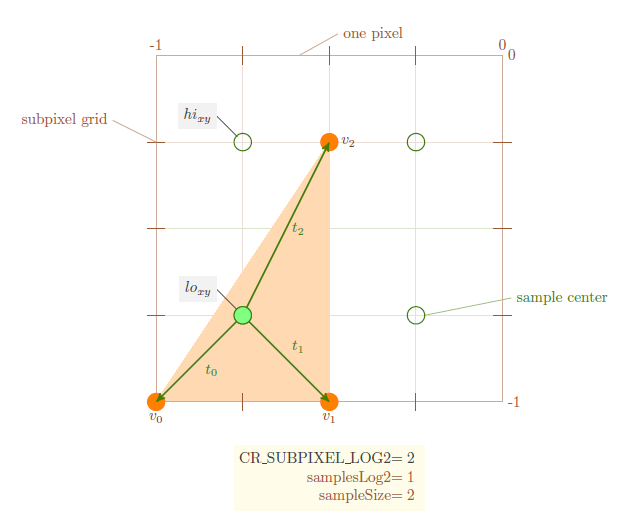
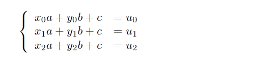
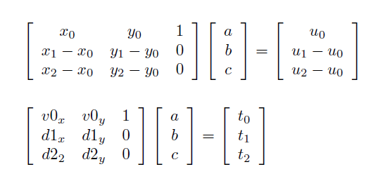
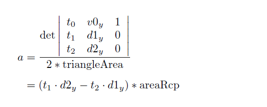

On our trip through CudaRaster, Samuli Laine and Tero Karras' open sourced implementation of their High-Performance Software Rasterization on GPUs paper, it's time to check out triangle setup. This is in fact the first step in the process, so we're going backwards here. Each thread takes care of one triangle, so there's few headaches this time in keeping the GPU busy. The challenge is efficient triangle setup, clipping, and correct subpixel snapping and culling.
Once again I've uploaded a version of Util.inl, Util.hpp and TriangleSetup.inl which is from CudaRaster 1.1 but with more comments added. The file is most definitely still...
* Copyright (c) 2009-2011, NVIDIA Corporation
* All rights reserved. [...]
* THIS SOFTWARE IS PROVIDED BY THE COPYRIGHT HOLDERS AND CONTRIBUTORS "AS IS"
... and I make no promises about the correctness of my comments or my analysis!
As I mentioned, there is no need in this phase to batch up work during input, cleverly pack it to keep threads busy, and be smart about the write-out phase. A simple one-thread one-triangle setup works fine. Input and output is mostly coalesced, the only exception being triangles that are culled entirely, or triangles that generate multiple clipped triangles. For the clipping case, that should happen rarely enough that a simple atomicInc and some copies are sufficient, without tanking performance.
Instead, it's all about old school triangle setup, culling, snapping and clipping. A great refresher on what the code is doing can be found in Some notes on Graphics Hardware from Tomas Akenine-Moller. The idea behind triangle setup is explained in more detail in the original Triangle Scan Conversion using 2D Homogeneous Coordinates from Marc Olano et al. I will recap the math below as well in "Triangle Setup - Theory", but first it's important to understand the difference between subpixels and (sub)samples.
Subpixels versus Samples
If you look at CudaRaster 1.1, you'll see that CR_SUBPIXEL_LOG2 is 4, indicating that each pixel is composed of 16x16 subpixels. This is indeed the case, but it does not mean that CudaRaster is rendering at 16x MSAA. In fact, the maximum that it supports in this configuration is 8x MSAA, more on that later. The actual MSAA-count, ie. sample-per-pixel count, is configurable at runtime, and is stored in SamplesLog2.
If SamplesLog2 is zero, MSAA is off and we have just one sample per pixel. However, CudaRaster still performs all its computations in subpixels, so another way of saying this is that each sample covers 16x16 subpixels.
If SamplesLog2 is two, we are using 4xMSAA, each MSAA sample covering 4x4 subpixels.
With a maximum viewport of 2048x2048 and 16x16 subpixels per pixel, this is a bit unwieldy to illustrate, so instead I've tried to show two configurations, MSAA off and MSAA on, with a 4x4 viewport, and 4x4 subpixels per pixel (click to enlarge).
The entire rectangle represents the 4x4 viewport in both cases. Each red square is a pixel. Pretending that CR_SUBPIXEL_LOG2 == 2, there's 4x4 subpixels per pixel. On the left, when MSAA is off, each green sample covers 4x4 subpixels. On the right, with 2xMSAA, each sample covers 2x2 subpixels, the highest sampling rate supported (taking a sample per subpixel doesn't work). The red numbers measure subpixel coordinates, which is what CudaRaster uses to position vertices. The green numbers are sample coordinates.
Snapping and Culling
Culling Part One
The first thing to do is check if the triangle can be trivially culled. If it turns out that all three vertices are on the wrong side of a clip-space plane, then the triangle isn't visible. For speed reasons, the code first checks a necessary but not sufficient condition that just the first vertex is on the wrong side of at least one plane. This is the case for a coordinate c (c = v0.x, y or z) when..
// A coordinate c is valid if // -1 <= c/w <= +1 // -w <= c <= +w (w>0) // fabs(c) <= +w // so invalid means fabs(c) > w if (v0.w < fabsf(v0.x) | v0.w < fabsf(v0.y) | v0.w < fabsf(v0.z))
If a triangle passes, the next thing to check is, does it need clipping in Z. If not, we can go ahead with triangle snapping: the task of taking floating point homogeneous coordinates, and converting them to projected, 2D integer subpixel coordinates. This is the job of snapTriangles.
Snapping
This is fairly straightforward: just divide x and y by w, and scale the range -1...+1 to -viewportWidth/2...+viewportWidth/2, resp. ..Height for y. As mentioned though, CudaRaster does all its math in 16x16 subpixels, so the actual scaling factor is an extra 1 << CR_SUBPIXEL_LOG2. The resulting float is converted to an int with round-to-nearest (Cuda cvt.rni), so we correctly include a subpixel if and only if its center (0.5, 0.5) is covered by the triangle.
Note that it's possible that the resulting x and y coordinate extends beyond 2048/2 * 16 (ie. 1 << CR_MAXVIEWPORT_LOG2 + CR_SUBPIXEL_LOG2 - 1). This happens when the triangle needs clipping in the x and/or y direction. snapTriangles doesn't care, all it needs is a valid depth range.
In fact, a cheap way to detect that the triangle does not need that sort of xy clipping is look at the resulting snapped integer coords. If they are within that range, which conveniently is precisely what an int16_t can fit, we can go straight ahead with triangle culling.
Culling Part Two
The triangle is in the frustum; maybe it can be backface culled, or maybe it's so small or thin it doesn't cover any actual samples. prepareTriangle figures out what's going on.
First we compute the edge vectors connecting p0 with p1 and p0 with p2. These deltas d1 and d2 are also measured in subpixel coordinates.
Their 2D cross product gives us twice the signed area of the snapped triangle, in screen space. If it's negative, the triangle is backfacing and should be culled.
If this test passes, the code checks the size of the triangle AABB, measured in samples, and if it's small enough (1x1, 2x1 or 1x2) it checks the one or two samples contained in the AABB for actual point-in-triangle containment. If they both fail, it means we have a tiny triangle that falls between the two nearest sample points.
The confusing part is the distinction between samples and subpixels, plus the fact that we want to test for coverage at the center of a sample. If you forget about MSAA for a second, and just look at the entire pixel, then coverage testing needs to happen at the (0.5,0.5) center offset. So the same is true for supersampling: split the pixel up in a grid of multiple samples, and test coverage at the centers of each sample.
In the earlier drawing, that would be the center of the big green square (I didn't mark it).
Now, recall that all math is done in integer coordinates, measured in subpixels. In the above drawings, after snapping each coordinate is in range -8...+8, integer values only. We cannot move by "half a subpixel", there's no fractional bits. It follows that if we need to move by half a sample, then each sample needs to cover at least 2 subpixels (or any even multiple of subpixels).
In the drawing on the left, each sample covers 4 subpixels per dimension. Shifting by two subpixels moves us to the sample center. On the right, sampleSize is 2, and we shift by 1 subpixel to move half a sample.
This is the reason why CudaRaster needs to use CR_SUBPIXEL_LOG2 = 4, ie. 16 subpixels per pixel, to support up to 8 samples per pixel:
if (numSamples > 8)
fail("CudaSurface: numSamples cannot exceed 8!" );
So the first thing we do is compute a bias that will a. move us back in the range 0... viewportWidth * subPixelCount, versus minus half of that to positive half of that; and b. shift by another half-a-sample's worth of subpixels, so the center of the left-most lowest sample ends up at (0,0).
If you look back at the above picture, this is what snap bias indicates -- biasX, biasY in the code.
In this shifted frame, snapping to a sample is as simple as clearing the lowest CR_SUBPIXEL_LOG2 - SamplesLog2 bits, which is to say, do & -sampleSize.
That truncates down, which is what we want for the top right of the AABB, 'hi_xy'; for the lower left 'lo_xy' we want to round up, so add sampleSize-1 before chopping:
int lox = (int )add_add(lo.x, sampleSize - 1, biasX) & -sampleSize; int loy = (int )add_add(lo.y, sampleSize - 1, biasY) & -sampleSize; int hix = (hi.x + biasX) & -sampleSize; int hiy = (hi.y + biasY) & -sampleSize;
This may seem counter-intuitive at first, but it makes sense: we're interested in samples covered by the interior of the triangle only.
If this AABB is 1x1, 2x1 or 1x2 then we check if lo or hi is covered by the triangle, in which case it survives culling:

In this example, v0, v1 and v2 have been snapped to subpixels, 4x4 subpixels per pixel (the big square is one pixel -- not the viewport this time). Each sample covers 2x2 subpixels, so we shift one subpixel to find a sample center. Rounded up (lo) and down (hi) to these sample centers, we find a 1x2 sample-AABB.
The code essentially computes the triangle area for lo,v0,v2; lo,v1,v0; and lo,v2, v1. If they're all negative, lo is inside v012, the triangle contains the sample, and we can't cull.
If that didn't work, we try again with hi, provided that hi != lo.
An interesting case is if the triangle is degenerate, for example if v0 was located at v1. In this case, hi wouldn't move (still rounded "left" from v2) but lo would move one sample to the right (to the circle tagged 'sample center'). In effect the "lower left" of the AABB is now to the right of hi! The code catches this with
if (lox > hix || loy > hiy) return 2; // Between pixels.
A special case of this special case is if we have such a triangle that falls exactly on a sample coordinate. That is, the degenerate column of vertices v0, v1, v2 moves left one subpixel. In that case lox is no longer > hix, and we correctly fail to reject the triangle.
Now all of this is fine and dandy, but I'm not sure it is true :) It seems to make sense, but there's two things that bother me. First, there is no N-rooks pattern anywhere in sight. What I think is going on here is that we cull against the worst case -- assume each sample is alive. Whether or not a sample is actually used by a certain MSAA N-rooks pattern is up to fine raster; worst case, we pass a triangle that didn't overlap any actual, live samples.
The second nagging bit is that I can't spot any vertex snapping to non-sample-coordinates. T.A.Moller suggests this (section 2.2.1) to avoid the need for complex tie breaker rules when a vertex snaps to a sample center. So I'm expecting code to clear the lowest (CR_SUBPIXEL_LOG2 - SamplesLog2 - 1) bits, but where is it :\
Triangle Setup - Theory
With all that out of the way, it's time to set up a plane equation for barycentric interpolation of depth, and maybe also U and V (barycentric coordinates, not texture coordinates). Solving for a single interpolator is the job of setupPleq, called zero or more times by setupTriangle (if there's no depth nor attribute interpolation, we don't bother).
As Olano shows, the goal is to find a plane equation ax+by+c so that for any homogenous 2D vertex (x,y,1) we get the intended vertex attribute u:

Shuffling and rewriting in terms of the variables used by the code gives...

Conveniently we already have the edge vectors d1, d2. At this point determinant computation for Cramer's Rule is also easy:

.. and this is pretty much what you'll find in the code. This trick doesn't work for c, but that's ok: c can be evaluated by picking a point x,y and making sure that c = t(x,y) - ax - by.
It looks like the point chosen to compute c is v0, but in a roundabout way: jump to the sample nearest to the center of edge v1-v2, and then move back to v0 in subpixels. I'm guessing this is to maximize precision, which brings us to...
Triangle Setup - Practice
Two implementation details make Cramer's rule a little less straightforward.
Sample based plane equation
First, we will want to evaluate the plane equation at sample locations, using sample coordinates. However the input vertex and edge vectors are expressed in subpixels, and the corresponding vertex attribute values belong to vertices, not snapped sample coordinates. setupTriangle makes sure to shift vertices to a sample-relative coordinate frame to fix the first issue...
...while setupPleq takes care of expressing the plane equation in units that expect sample coordinates. This brings us to complication number two, the use of fixed point with dynamic precision.
Fixed point -- t0, t1, t2
For t0,t1,t2, I believe the goal here is to make sure that the top 8 bits are zero, leaving 24 bits of precision with plenty room for some overflow.
Since values are already floats, the fastest way to count the number of leading zeroes in the equivalent uint number (not reinterpreting bits) is to look at the exponent.
When casting an uint to float, the GPU will count the number of leading zeros in the uint, and shift the uint left by that count plus one, so all zeroes as well as the first leading set bit are gone. The remaining bits are what goes into the lowest 23 bits of an IEEF float. The leading-zero-count is stored in the exponent, plus 127.
Thus, the exponent minus 127 gives us the index of the first one-bit in the original uint. The kind of values that need shifting have fewer than 8 leading zeroes, ie. an exponent that is 22..31. Exponent minus 127 minus 22 gives the shift-right count sh that changes (u32)values into a sh:32-sh fixed point.
To keep the math meaningful, all values use the same shift -- namely the biggest shift, coming from the biggest floating point number (all values are positive), representing the lowest amount of leading zeroes. See the code comments for some example number conversions.
Fixed point -- areaRcp
For areaRcp, we reinterpret the float representation, keeping only the lowest 23 bits, and explicitly set the implied top bit. This is now a correct FP number, but it does not necessarily have its period at the right location for 9:23 FP. Instead of shifting it to the right spot now, we'll adjust the shift that needs to happen when multiplying some other FP with rcpMant: we should shift things back by 23 bit, minus the (unbiased) exponent of areaRcp.
For instance, if the unbiased exponent was 2, the period was really two bits to the left of where it should be, so shift right by two bits less to compensate.
So effectively, the fixed point representation of rcpMant is
9 + exp(areaRcp)-127 : 23 - (exp(areaRcp)-127)
Fixed point -- result
Following the computation of a, b (stored in xc, yc) and then c (pleq.z), this is the fixed point precision:
// let E = exponent(areaRcp)-127. // // The fixed point representations are.... // // t0,t1,t2 = sh : 32-sh // // rcpMant = 9 + E : 23 - E // // xc = t1 . d2 ... * rcpMant // = 9 + sh + E : 23 + 32 - sh - E // // xc >> 13 = sh + E - 4 : 10 + 32 - sh - E // // so ( ( xc >> 13 ) vcx ) >> ( rcpShift - sh - 13 ) = [recall rcpShift = 23 - E] // // sh + E - 4 : 10 + 32 - sh - E >> 23 - E - sh - 13 // >> 10 - E - sh // = 6 : 32
Since the result is uint_3, we only keep the 32 bits "behind the comma". This only works if the input values that we're trying to interpolate are in range zero to one. This is enforced by expecting the input to be a uint32_t range-wise, but stored as a float. So going back to setupTriangle we find:
Compared to all that, the path for triangles that need clipping is a breeze.
clipTriangleWithFrustum clips a slab at a time: first x/w against planes -1, +1, then y, and z. Clipping isn't necessary for x, if every vertex has x/w greater than -1 and less than +1. Which for positive w means w > fabs(x).
If that fails, the edges are clipped against a single plane at a time, calling clipPolygonWithPlane. There are two interesting bits to this.
First, vertices are represented by their barycentric coordinate. Obviously we start with just (0,0), (1,0), (0,1), but during clipping, vertices can easily be moved, and new ones inserted, by changing or adding more pairs in the list. This means that we always keep the original actual vertices v0, v1, v2 around unchanged, and mess about with the list of barycentric coords F32* bary instead.
Note that the vertices haven't been snapped yet; v0,v1,v2 are clip-space homogeneous 4D floats.
A second interesting trick is that clipPolygonWithPlane does not take a plane equation to clip against. Instead, we evaluate the plane equation at the three vertices. We know we will need to clip if any of the edges changes sign; that edge is crossing the plane, from negative to positive halfspace.
What's more, this lets us easily evaluate the plane equation for any newly added vertex as well:
planeEquation( a * p0 + b * p1 ) == a * planeEq(p0) + b * planeEq(p1)
for any scalars a, b and float3 p0, p1. That is, given a barycentric coordinate, simply interpolate the plane equation value at the vertices.
This is all we need to figure out the plane distance for each edge's endpoints, check if it crosses the plane, if so figure out where, insert a new vertex, and check which of the two endpoints to keep, if any:
//--bpe Figure out planeEq( baryIn mix of p0, p1, p2 ) for the start vertex of the current edge
F32 av = v0 + v1 * baryIn[ai + 0] + v2 * baryIn[ai + 1]; for (int bi = 0; bi < numIn * 2; bi += 2) { //--bpe Figure out planeEq( baryIn mix of p0, p1, p2 ) for the end vertex of the current edge
F32 bv = v0 + v1 * baryIn[bi + 0] + v2 * baryIn[bi + 1]; //--bpe Did we cross a clip-space plane? If so, planeEq switched from positive to negative or vice versa. if (av * bv < 0.0f) { //--bpe Compute the distance of the cross-over point.
F32 bc = av / (av - bv);
F32 ac = 1.0f - bc; //--bpe Insert new point by virtue of inserting its barycentric coordinates.
baryOut[numOut + 0] = baryIn[ai + 0] * ac + baryIn[bi + 0] * bc;
baryOut[numOut + 1] = baryIn[ai + 1] * ac + baryIn[bi + 1] * bc; //--bpe Note that numOut keeps track of the number of barycentric coords written to baryOut, // so actual number of vertices after clipping against this plane is numOut >> 1.
numOut += 2; } //--bpe Is the current vertex valid? If so, keep it alive, copy it to baryOut. if (bv >= 0.0f) {
baryOut[numOut + 0] = baryIn[bi + 0];
baryOut[numOut + 1] = baryIn[bi + 1];
numOut += 2; }
ai = bi;
av = bv; }
Once we have clipped triangles, each one is snapped to subpixels, and checked for subpixel culling.
If zero triangles survive, we're done.
If exactly one triangle survives, it can take the place of the original triangle in the output queue.
If there's two or more, a simple atomicInc grabs space in the cliplist. To figure out how much space we need, we loop twice: snap-and-cull-test to figure out the total count, allocate, then snap-and-cull-test to copy the survivors.
 Triangle Setup in CudaRaster
Triangle Setup in CudaRaster
{kind=link}
{kind=link}